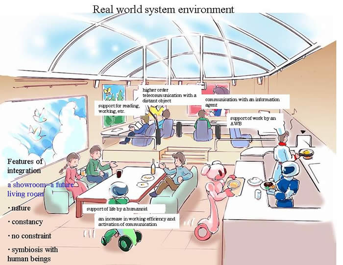

Large External Databases

- Types of data
- Positive ground facts (ground atoms)
- Mixed ground facts (ground literals)
- Disjunctions of positive ground facts (ground positive clauses)
- Disjunctions of mixed ground facts (ground clauses)
- Non-ground facts (atoms and literals)
- Range restricted rules (range restricted clauses)
- More general data
- Features of data
- General potential for "dirty" data
- Inconsistent data (for only some types of data)
- Data that is inconsistent with internal axioms
- Uncertainty and imprecision
- Storage of data
- SQL databases
- Semantic nets (including WWW)
- RDF triples
- Programs
- WWW services